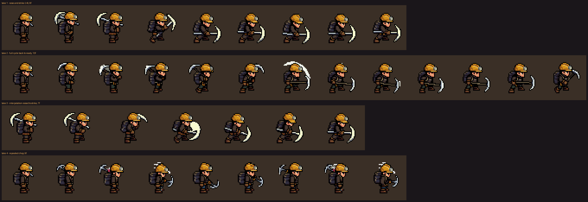
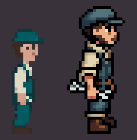
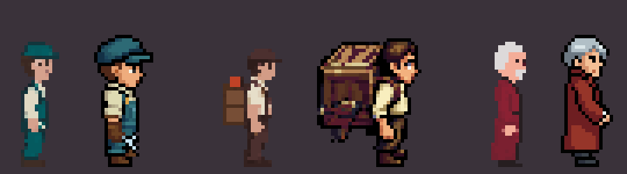
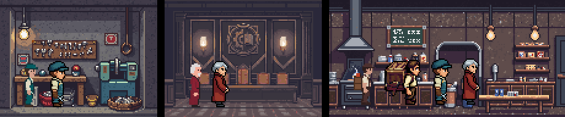
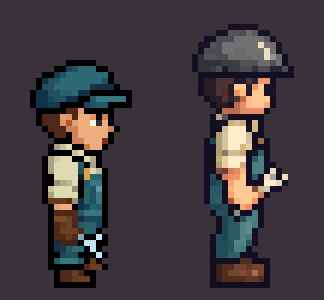
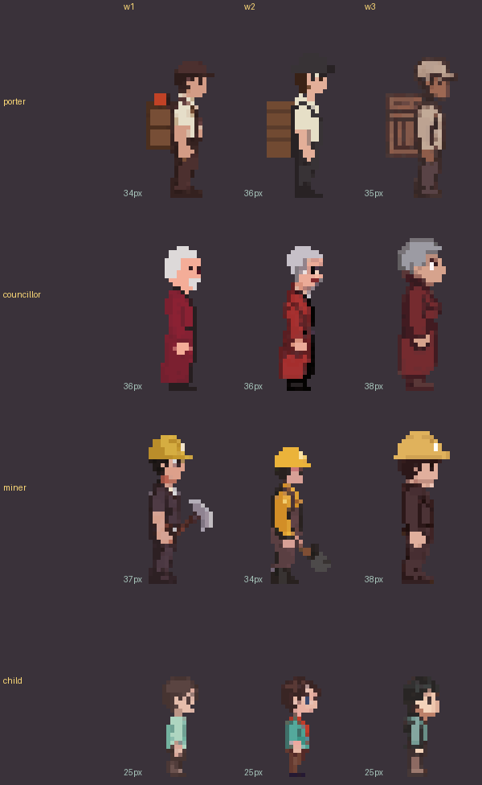
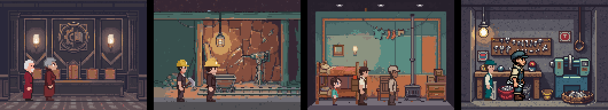
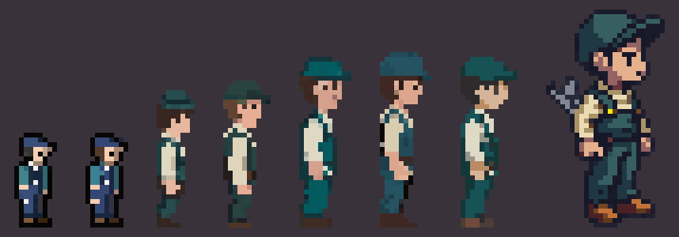
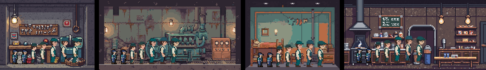

Figures: requirements and probe rounds
▶ Figures in the shaft: every version below, idle and animated, in the real rooms at 1×, 2× or 4×, with a version picker and keep/drop verdicts per role.
▶ Foreground cuts: the stair rail, the cell bars, the canteen table and the school desks lifted into their own sprites, so people stand behind them. Before and after, at 1×, 2× or 4×.
Figure probes, round by round. Each round asks one question, answers it with a handful of generations, and hands its decision to the next round. Newest round first.
Decided so far:
- Scale: adults ≈ 36 px, children ≈ 25 px (your pick after round 1; spec and principles updated).
- Route: PixelLab
create_character, side view. It holds the size, follows the costume, and has walk templates. - Wording: a plain costume description (w1) is as good as the styled ones; the "Eastward" words add nothing (round 2).
- Recipe (your verdict, round 4):
create_character,mode: v3, size 40,outline: single color black outline,detail: high detail, description "side view, <costume>". Every standard-mode and oversize version was dropped: no outline, too thin or too big. - Children: the same recipe at size 28 gives 25 px with the adults' outline and shading.
- Motion: template
walking-8-framesandbreathing-idle(1 gen each, east only) hold every v3 figure within ±1 px. Custom v3 actions need picking: the miner has four swing takes to choose from.
Round 5 (now in the shaft viewer): all 16 roles on the recipe, each with walk and idle. Re-rolled once: air tech (came out as a hazmat astronaut), constable (32 px), resident (bald, then near-black), medic (plain), teacher (40 px). PixelLab failed three re-rolls under load; they were simply resubmitted.
Cost so far: about 130 generations.
Round 6: the miner swing, four takes
Chosen: take 2, with the colour drift repaired — every frame is held to the palette of the first frame
(shaft/fixpalette.py, 607 pixels moved, the drawing untouched). It plays first below and is what the miner does in the shaft.
The four attempts, all on the same figure, played at 1× and 4×. Take 3 is meant to be played forward then back; the others play straight through. Pick one in the shaft viewer (section Miner swing: four takes), where they run at game size in the dig face.
| Take | How it was made | Frames | What it does |
|---|---|---|---|
| 1 · raise and strike | v3 "raising the pickaxe overhead … striking down in front, feet planted" | 9 | Ends crouched with the pickaxe down, so it snaps back to standing |
| 2 · full cycle (chosen) | v3 12 frames "… then lifts it back up to the ready stance, seamless loop", then fixpalette.py | 13 | Closes almost fully; the green drift on the trousers is repaired |
| 3 · interpolation | v3 between two frames of take 1: raised overhead → struck down | 7 | Clean raise and strike; needs ping-pong to come back up |
| 4 · repeated chop | v3 "chopping repeatedly at a rock wall … feet planted" | 9 | Loops on its own, but the swings are small and the pickaxe thins out |

Round 3: motion
Does a walk hold the figure's size and costume, and can a custom action (carry, swing, idle) replace the template? Played at 1× and 4×, on a room-coloured background.
| Animation | Recipe | Height per frame | Notes |
|---|---|---|---|
| Engineer walk | template walking-8-frames, 1 gen | 36–37 | Round 1. Clean, costume stable |
| Engineer idle | template breathing-idle, 1 gen | 37 | Barely moves: invisible at 1× |
| Porter walk | template walking-8-frames, 1 gen | 33–34 | Crate stays on the back |
| Porter walk, loaded | v3 "walking steadily, leaning slightly forward under a heavy load", 1 gen | 34–35 | Canvas grew to 56 px; lean reads as weight |
| Miner swing | v3 "swinging a pickaxe down at a rock wall", 1 gen | 36–38 | A small low chop, not a swing; a rock appears at the feet |
| Councillor idle | v3 "shifting weight, nodding while thinking", 1 gen | 36–37 | Turns into a walking stride mid-loop |
Round 2b: quality mode
Standard mode (left, 1 generation) against v3 mode (right, 2 generations), same engineer description. v3 has real form shading on the cap, face and trousers, a readable face and wrench, and 38 colours against 16. It came out 44 px at size 48, so it is being re-run at size 40.

v3 at size 40: on scale
Size 40 lands at 37–38 px, the chosen scale. Each pair: standard mode (left) and v3 at size 40 (right). v3 costs 2 generations instead of 1 but matches the rooms. The v3 porter's crate is far too big (30 px wide), so round 4 asks for a small one.


Style image ("pro flash")
create_character_pro_flash with a 48×48 crop of the workshop as its style image (about 6 generations). Left: v3 at size 40; right: pro flash. As rich as v3 but 44 px, and the cap went grey. Not worth the extra cost.

Round 2: prompt wording
Four hard roles × three wordings, standard mode, size 32 (child size 22 with a larger head). w1 plain costume · w2 + "dieselpunk underground colony, Eastward style, warm lamp light, muted colours", detailed shading, high detail · w3 "side view full body pixel art character, … clear readable silhouette, Eastward (Pixpil) art style, muted warm palette, one pixel black outline", guidance 10.

| Role | w1 plain | w2 styled | w3 structured |
|---|---|---|---|
| Porter | crate on a frame, 34 px | crate floats behind the back | crate on a frame, 35 px |
| Councillor | grey hair, terracotta coat | same, a little busier | 38 px, big hair |
| Miner | hard hat, pickaxe | orange vest, stubby tool | oversized hat, no pickaxe |
| Child | 25 px, mint shirt | 25 px, red scarf | 25 px, dark |
The porter's crate, which the old mannequin route never managed, comes through in all three. The styled wordings do not make figures richer; detailed shading barely changes standard mode.

Round 1: recipe
Which route gives figures that fit the rooms at the right size and can walk? Same role everywhere, the engineer. Result: 22 px reads as a child in every room; the character tool is the only route with size, costume and walk; you picked ≈ 36 px.

| Try | Recipe | Height | Costume | Walkable | Notes |
|---|---|---|---|---|---|
| A | mannequin template, init 150, flat shading (v10 recipe) | 21 | navy, not teal | redraw per frame | Soles on row 30, not 31 |
| B | as A, medium shading, "Eastward" | 21 | navy | redraw per frame | Same as A |
| C | as A, detailed shading, warm light on the front | 21 | navy | redraw per frame | 14 colours; no visible rim light |
| D | as C at init 100 | 22 | teal | redraw per frame | Turned to face the viewer |
| E s24 | create_character side, size 24 | 29 | teal + cream | walk templates | Clean profile |
| E s28 | … size 28 | 31 | teal + cream | walk templates | Best fit to the rooms |
| E s32 | … size 32 | 36 | teal + cream | walk templates | Large in the 96-px rooms |
| E2 | … size 32, detailed shading, high detail | 37 | teal | walk templates | Barely different from E |
| G | pixflux over E s32, init 200, detailed | 36 | teal | — | Near copy of E |
| F | pixflux, no template, 48×48 | 46 | teal + cream | redraw per frame | Richest shading; far too big |
In the rooms, 2×

Requirements
| # | Requirement | Check |
|---|---|---|
| R1 | One scale for everyone. Proposed: adult ≈ 30 px (was 22), child ≈ 20, headgear adds at most 2 | Opaque box ±1 px across the set |
| R2 | Fixed canvas, transparent, soles on the bottom row, centred, facing right (mirrored for left) | Box bottom and centre column |
| R3 | Reads at 1× and 2× against busy rooms | Composite over the rooms each role works in |
| R4 | Matches the rooms' look: warm light, clean shading, full dark outline, profile | Side by side with the rooms at 2× |
| R5 | Role reads from headgear or tool plus garment colour; no two roles share both | All 16 in one lineup at 1× |
| R6 | Animatable: walk for anyone moving, idle, and a few shared work loops | Loops close; size holds every frame |
| R7 | Porter shows cargo, loaded and empty | Crate visible at 1× |
Roles (16): engineer, miner, porter, grower, pump-tech, air-tech, kitchen-hand, medic, teacher, constable, archivist, investigator, councillor, resident, child, elder.
Plan
- Round 1, recipe (this page). Mannequin vs character tool vs free pixflux; scale in real rooms.
- Round 2, prompt wording on the chosen route: 4 roles including the hard ones (porter with crate, councillor, child, miner with lamp), 3–4 wordings each, plus the style lever (detail/shading/"Eastward"/lighting words). Pick one prompt template.
- Round 3, motion: walk templates vs custom (v3) walks on 2 roles, idle, one work loop; check the loop closes and the size holds.
- Round 4, full set: all 16 roles, 2 seeds each; lineup at 1× for R5; composite each role into its rooms; redo clashes.
- Round 5, motion set: walk + idle for all; shared work loops (hammer, tend, carry, read/sit).
- Integrate: sprites and strips in the manifest with anchors; the renderer draws them instead of the vector placeholders; porters walk the stairwell; workers stand on each room's floorY.